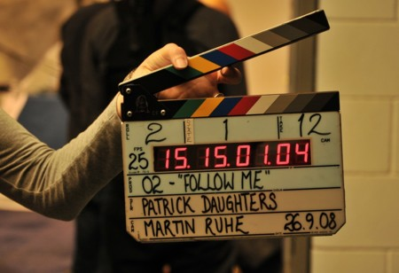
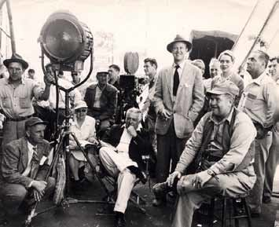

Producción
Aquí es donde se crea el video y es donde entra en juego la contratación (actores, script, fotografía) depende de al magnitud del proyecto requiere más o menos equipo técnico, pero con la misma calidad. Aquí todo el plan de rodaje se va a regir por el plan de producción, y empieza con los técnicos, atrecistas, luz.
la llamada al rodaje: lo debe decir el asistente de producción:

- Todo listo: esta orden previene de que el rodaje va a empezar
- Silencio todos
- Sonido listo: el sonidista empieza a grabar el sonido
- cámaras: se puede hacer pulgar arriba para que no haya reververación; el claqueta se acerca donde sucede la acción con los datos y hará el clac.
- acción:
- corten: es el único que puede decir corten, los actores no pueden dejar de grabar, hasta que el director no digan corten.
Fuera de esto hay otas ordenes como por ejemplo:
- Preparción
- Escena grabada: se va a utilizar esa escena
- Pasamos a siguente escena
- Descansar/descanso/desmonte
Equipo técnico que se contrata en esta fase

-
Director de cine: es el responsable máximo de la calidad visual, artistica, narrativa; define el tono: color, cómo serán los personajes, el vestuario, la fotografía, el ritmo; y siempre compartirá sus ideas con el productor y con el director de fotografía, y puede estar también el director artistico. Tiene que tener muy claro cómo tiene que contarlo y por qué, tiene que ser un gran comunicador que tenga don de Gentes, debería conocer a todo el mundo que se desarrolla en la película e importante no meterte en trabajo que no son tuyos. Cuánto cobra un director de cine de promedio por película: 60.000€; *puede hacerlo variar el ingreso de la taquilla, y su finalidad absoluta es dirigir la película.
-
El coodirector: cuando una película de gran envergadura y el director no puede estar en todas partes ejemplo en Matrix y Avengers, cobra en función de las escenas que haya grabado.
-
Primer ayudante de dirección: organizar el set de rodaje día a día, distribuye el tiempo, recursos y puede tener la capacidad o responsabilidad de intervenir en el guion técnico o en la dirección. Tiene que tener un carácter enérgico, comedido y proactivo y por supuesto tiene que saber todo lo que va a suceder. se ubica al lado del del cámara. Esta persona cobra entre 900 y 1.100€
- Segundo ayudante de dirección: es una figura que aparece dependiendo el tamaño del proyecto, redacta los partes y firma a los autores, prepara también a los extras, cobra entre 500 - 600€
- Auxiliar de dirección: está a las ordenes del ayudante y segundo ayudante, se puede decir que son los brazos y los oídos de estos dos, cuando hay varios sets de rodaje, puede hacer cosas como cortar el tráfico de coches, o propagar la orden de silencio, cobra entre 150 - 300€ por semana.
- Meritorio: es el ayudante de los auxiliares son también llamados becarios y su función principal es no molestar, cobran 0.
- Director de casting: este a sus órdenes puede también tener al ayudante de dirección y lo demás, y son los encargados de hacer los casting a los actores principales y secundarios. Suele tener su propia agencia que se encarga de contactar con el sitio donde se hace el rodaje, pero si hay que hacer un casting para los extras los deben hacer los auxiliares.
- Director artistico: Es el responsable de dirigir el equipo de arte en la producción, ejemplo, crear ilustración o diseños para ilustrar parte de la pelicula, en los video juegos también se hace, también puede crear maquetas de los sets de rodaje. Luego también la infografía:
- Cartel
- Rótulos
- Letras
- Los créditos tanto iniciales como finales
- Edición de libros
- música
- Prensa
- Publicidad
- Internet
Gente que está dentor de la dirección artistica:
- Maquilladores
- Estilistas
- Carpinteros
- Peluqueros
- Diseñadores de vestuario
- Diseñadores gráficos
- Sastres
-
Director de fotografía: Es la mano derecha del director, en caso de que este no estuviera el director de foto le sustituiría y es el responsable de la imagen, en todos sus apartados: arte, escenario, iluminación, maquillaje: su función principal es que la idea incial sea una realidad en la película, es función del director de fotografía crear esa realidad y y se hace a través de los colores entra en la preproducción y está hasta el final, tansmitirá la psicología de la película y la transformará a imagen artistica del rodaje. En el set del rodaje el director y él aligen los planos, en la postproducción hace el trabajo de etalonaje: darle color a la película en el montaje, cobra entre 1800 y 3.600€ semanales.
quienes están bajo sus órdenes
- Camarógrafo: lleva la cámara prepara la cámara y sus ópticas durante el rodaje, cada plano que esté escrito y si tiene alguna duda se lo comunica al director de fotografía. Tiene que tener en cuenta el cableado y tiene que tener un sistema de grabación/disco duro. El de cine tiene que tener una versatilidad y reacción que no tiene el de televisión.
- Segundo operador de cámara: aparece cuando el rodaje es tan complejo que se necesita de dos cámaras (un plano contra plano o un combate)
- El foquista/follow focus:
- Auxiliar de cámara: hace labores de carga y descarga del los equipos desde y hacia el camión.
- Meritorio de cámara: Es un bacario que está aprendiendo.
- Asistetente de video: hace las labores de montaje de combo de videos
- Jefe de maquinistas: todas las maquinas para montar las cámaras, si es drones tiene que ser un maquonista especializada en drones
- Foto fija: por último estará el foto fija, y es el documentalista del filme.
-
Director de fotografía:
 back
back next
next home
home